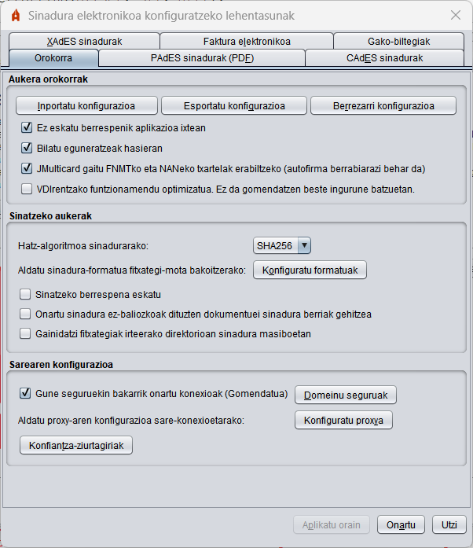
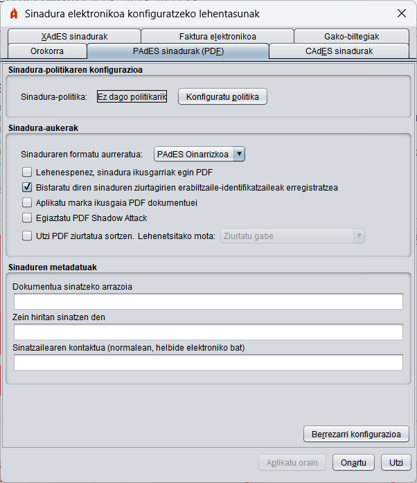
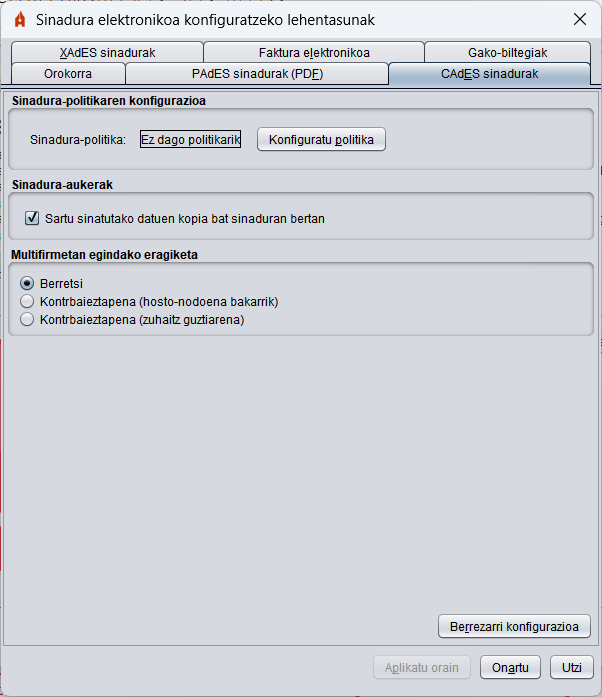
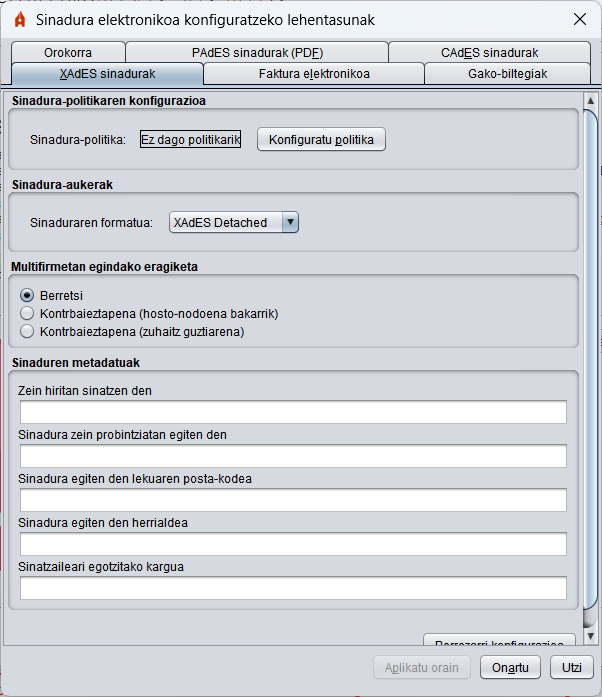
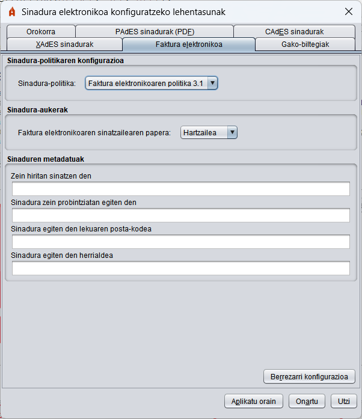
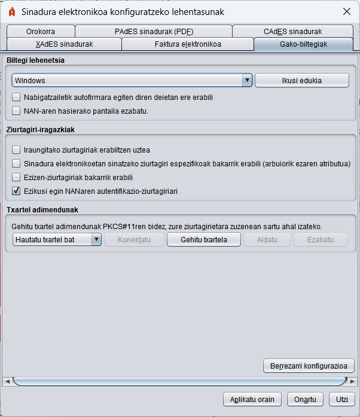

Lehentasunak menua
Tresnak sortutako sinadurak konfiguratzeko, sartu konfigurazio-menura aplikazioaren menu-barrako "Tresnak" -> "Hobespenak" aukeraren bidez. Menu honen bidez, aplikazioaren portaera orokorra eta formatu-mota bakoitzerako sortutako sinadurak konfigura ditzakezu.
Menuko edozein fitxategitatik "Utzi" botoia sakatzen baduzu, aldaketa oro alde batera utzita itxi egingo da; "Ados" botoia sakatzen baduzu, menua itxi egingo da eta menuan definitutako aukerak konfiguratuta geratuko dira; "Aplikatu orain" botoia sakatzen baduzu, menua itxi gabe egindako aldaketak aplikatuko dira.
Orokorra menua

- Aukera orokorrak:
- Inportatu aplikazioaren konfigurazio orokorra: Administratzaile batek emandako konfigurazio-fitxategi bat inportatzeko aukera.
- Leheneratu aplikazioaren konfigurazio orokorra: Aplikazioaren konfigurazio lehenetsia berrezartzeko aukera.
- Ez eskatu berrespenik aplikazioa ixtean: Aplikaziotik irteteko aukera ematen du, erabiltzailearen berrespenik gabe.
- Bilatu eguneratzeak hasieran: Aplikazioa abiaraztean eguneratzerik badagoen bilatu behar den konfiguratzeko aukera ematen du.
- Gaitu JMulticard, FNMT eta NANe txarteletarako: Windows eta Linux-en bakarrik. Autofirman integratutako kontrolatzailea FNMT eta NANe txartelak erabiltzeko erabili behar den konfiguratzen du. Desaktibatuz gero, sisteman aurkitutako kontrolatzaileak erabiliko dira. Funtzio hau erabilita, txartel bateragarriak erabil daitezke erabiltzaileak kontrolagailua instalatuta ez duenean edo harekin bateraezintasunen bat duenean. Funtzio horren ondorioz, hainbat aldiz eska dakioke erabiltzaileari txartelaren PINa sinadura masiboko prozesuetan sartzeko. Konfigurazio horrek ez du eraginik izango aplikazioa irekitzen den hurrengo arte.
- VDIrentzako funtzionamendu optimizatua: Windowsen bakarrik. Konfiguratu WebScokets bidezko komunikazioa nabigatzailearekin, VDI ingurune batean Autofirma erabiltzean blokeoak saihesteko. Hala ere, konfigurazio horrek komunikazioa moteltzen du transmititu beharreko datu-kopurua handia denean, eta, beraz, ez da gomendatzen beste ingurune batzuetan.
- Sinatzeko aukerak:
- Sinadura-algoritmoa: Aplikazioak sinadura elektronikoak sortzeko erabiltzen duen sinaduraren algoritmo lehenetsia.
- Sinadura-formatuak: Dokumentu-mota jakin bat ematean zer sinadura-formatu aplikatu behar den konfiguratzen du. "Konfiguratu formatuak" botoia sakatzean, elkarrizketa bat agertzen da sinadura-formatu jakin bat konfigura daitekeen dokumentu-motekin:
- PDF dokumentuak
- Microsoft Office-ren OOXML dokumentuak
- Faktura elektronikoak
- XML fitxategi generikoak
- LibreOffice edo OpenOffice-ko ODF fitxategiak
- Gainerako fitxategiak
Fitxategi-mota horietako edozein CAdES eta XAdES formatuekin (dagozkien fitxetan ezarritako konfigurazioaren arabera) sina daiteke, eta horietako batzuk formatu espezifikoetan sina daitezke."Gainerako fitxategiak"
dokumentu-motak aurreko kategorietan ez dagoen edozein dokumenturi egiten dio erreferentzia.
OHARRA: Ez da gomendatzen faktura elektronikoak faktura elektronikoaren formatua ez den beste formatu batean sinatzea.
- Sinatzeko berrespena eskatu: Aukera hori aktibatuta dagoenean, sinatu aurretik berrespena eskatzen zaio erabiltzaileari.
- Sinadura ez-baliozkoak dituzten dokumentuei sinadura berriak gehitzeko aukera ematea: Aukera hau gaituz gero, Autofirmak ez du eragotziko sinadura berriak gehitzea (sinadura edo kontrbaieztapena) dagoeneko sinadurak dauden eta baliozkoak ez diren dokumentuei (ustelak edo iraungitako ziurtagiriak dituztenak).
- Irteerako direktorioan fitxategiak gainidatzi: Sinadura masiboko prozesu baten ondoriozko sinadura-direktorioen egitura sortzean eta sinadura gordetzeko izen bereko fitxategi bat aurkituz gero, lehendik dagoen fitxategia sinadura-fitxategi berrian gainidatzi nahi den edo sinadura izen berri bat erabiliz gorde nahi den konfiguratzeko aukera.
- Sarearen konfigurazioa:
- Gune seguruekin egindako konexioak bakarrik onartu (Gomendatua): Aukera hau aktibatuta badago, aplikazioa konektatu behar den web guneen SSL ziurtagiriaren konfiantza egiaztatuko da. SSL ziurtagiri ezezaguna duten webguneetan lan eginez gero, litekeena da aukera hori desgaitu behar izatea.
"PAdES sinadurak (PDF)" menua

"CAdES sinadurak (bitarrak)" menua

"XAdES sinadurak (XML)" menua

- Sinadura-politikaren konfigurazioa: XAdES sinaduretan jarraitzen den sinadura-politika adierazteko aukera ematen du:
Hauek dira konfigurazio-panelaren bidez eskura daitezkeen balioak:
- Ez dago politikarik: Sortutako XML sinadurek ez dute sinadura-politikarik adieraziko.
- EAO 1.9 sinatzeko politika: EAO sinatzeko politika deklaratzen da v1.9
- Neurrira egindako politika: Politikaren propietateak eskuz konfiguratzeko aukera ematen du.
- Politikaren identifikatzailea.
- Politikaren identifikatzailearen aztarna digitala.
- Politikaren identifikatzailearen hatz-marka digitalaren algoritmoa.
- Politikaren kalifikatzailea
- Sinatzeko aukerak:
- Sinaduren formatua:
- XAdES Enveloping: Enveloping modua konfiguratzen da (sinadurak sinatutako datuak biltzen ditu).
- XAdES Detached: Detached modua konfiguratzen da (sinadura eta datuak XML super-egitura batean).
- XAdES Enveloped: Enveloped modua konfiguratzen da (sinadura XML datuen barruan sartzen da).
OHARRA: AGEren sinadura-politikari esker, Enveloped eta Internally Detached formatuetan soilik egin daitezke sinadurak (hemen Detached gisa aipatzen da). Hala, EAOren sinadura-politika deklaratzen denean soilik konfigura daitezke sinadura-formatu horiek.
- XAdES sinaduren metadatuak:
- Zein hiritan sinatzen den: Sinatzen den unean sinatzailea zein hiritan dagoen.
- Zein probintziatan sinatzen den: Sinatzen den unean sinatzailea zein probintziatan dagoen.
- Sinaduraren posta-kodea: Sinatzailea sinatzen den unean agertzen den posta-kodea.
- Zein herrialdetan sinatzen den: Sinatzen den unean sinatzailea zein herrialdetan dagoen.
- Sinatzailearen kargua: Sinadura egiten duenaren kargua.
"Faktura elektronikoa" menua

- Sinadura-politikaren konfigurazioa: Erabili behar den faktura elektronikoaren sinadura-politikaren bertsioa adierazteko aukera ematen du.
- Sinatzeko aukerak:
- Faktura elektronikoaren sinatzailearen zeregina: Sinatzaileak fakturaren bizi-zikloan betetzen duen rola konfiguratzeko aukera ematen du.
- Faktura elektronikoen metadatuak:
- Zein hiritan sinatzen den: Sinatzen den unean sinatzailea zein hiritan dagoen.
- Zein probintziatan sinatzen den: Sinatzen den unean sinatzailea zein probintziatan dagoen.
- Sinaduraren posta-kodea: Sinatzailea sinatzen den unean agertzen den posta-kodea.
- Zein herrialdetan sinatzen den: Sinatzen den unean sinatzailea zein herrialdetan dagoen.
"Gako-biltegiak" menua

- Biltegi lehenetsia:
- Mahaigaineko interfazean lehenespenez kargatuko den gako-biltegia hautatzeko aukera ematen du.
- Ikusi edukia: Hautatutako biltegiak dituen ziurtagiriak ikusteko aukera ematen du.
- Nabigatzailetik egindako autofirma-deietan ere erabili: Konfiguratutako biltegia lehenespenez kargatzea nahi duzun adierazten du, baita nabigatzailetik Autofirma-ra deitzean ere.
- Ziurtagirien iragazkiak:
- NANaren hasierako pantaila ez erakustea eta beti biltegiarekin lan egitea lehenespenez: Ez jarri hasierako pantaila NANa detektatzean, eta konfiguratuta dagoen biltegi lehenetsia erabiliko da.
- Iraungitako ziurtagiriak erabiltzen uztea: Aukera hori gaituta dagoenez, iraungitako ziurtagiriak sinadura-ziurtagiriak hautatzeko elkarrizketan agertuko dira, eta, hala, haiekin sinatu ahal izango da.
- Sinadura elektronikoetan sinatzeko ziurtagiri espezifikoak bakarrik erabili (errefusatu gabeko atributua): Aukera hau hautatuta badago, sinadurakoak direla berariaz adierazten duten ziurtagiriak bakarrik erakutsiko dira.
- Izengoiti-ziurtagiriak bakarrik erabili, hauek eskuragarri daudenean: Izengoiti-ziurtagiriak erabilgarri daudenean bakarrik erabili ahal izatea mugatzen du.
- NANaren autentifikazio-ziurtagiririk ez erabili: NANerako gakoen biltegietan dagoen kautotze-ziurtagiria ezkutatzen du.
- Txartel adimendunak:
- Txartel adimendunei alta emateko aukera ematen du, PKCS#11 kontrolatzailetik abiatuta, zuzenean gakoen biltegi irisgarri gisa erabili ahal izateko, ziurtagirien hautaketako elkarrizketatik. Hemen gehitutako txartel adimendunak biltegi lehenetsi gisa konfigura daitezke lehen ataleko goitibeherako menuan.
- Konektatzea: Egin konexio-proba bat hautatutako txartel adimendunaren gako-biltegiarekin.
- Gehitu txartela: Gehitu txartel adimendun berri bat. Txartel adimendunarentzako izena eta PKCS#11 kontrolatzailea dagoen bidea sartzeko elkarrizketa bat irekiko da.
- Aldatu: Hautatutako txartel adimendunaren kontrolatzailearen izena eta ibilbidea aldatzeko aukera ematen du.
- Ezabatu: Goitibeherako menuan hautatutako txartel adimenduna ezabatzen du.